MaticPress Pro Software Documentation
Welcome to MaticPress Pro, the ultimate solution for efficiently managing all your WordPress websites from a centralized dashboard. This comprehensive documentation will guide you through the various features and functionalities of MaticPress Pro, empowering you to enhance the performance and user experience of your WordPress sites effortlessly.
1. Manage WordPress Websites
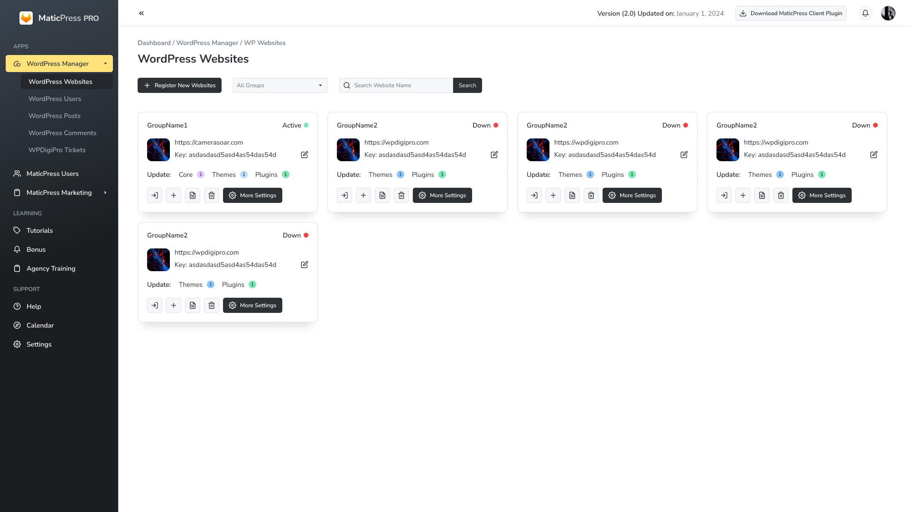1.1 WordPress Core, Themes, Plugins Updates Checker
MaticPress Pro simplifies the process of keeping your WordPress websites up-to-date. Easily check for updates to the WordPress core, themes, and plugins, and execute updates seamlessly from the dashboard.
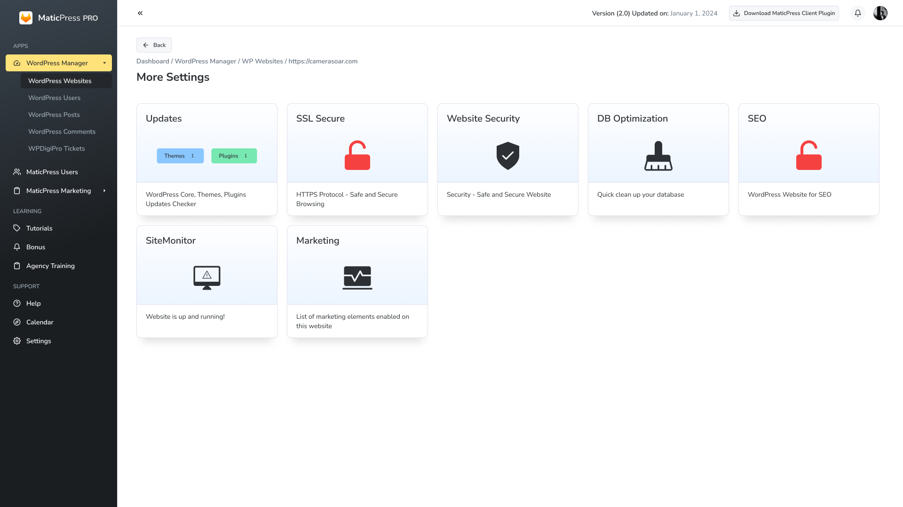1.2 SSL Secure
Ensure the security of your websites by managing SSL certificates effortlessly. MaticPress Pro provides a streamlined interface to enable and manage SSL certificates for all your WordPress sites.
1.3 Website Security
Enhance the security of your websites with MaticPress Pro's security features. Implement security measures such as firewalls, login attempt monitoring, and more to safeguard your WordPress sites.
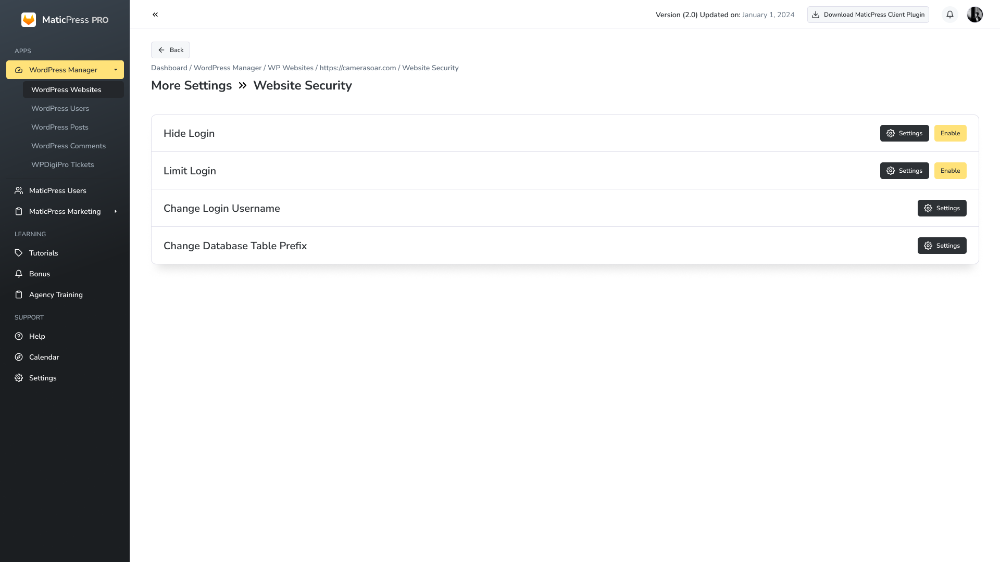1.4 Database Optimization
Optimize the performance of your WordPress sites by efficiently managing and optimizing databases. MaticPress Pro allows you to perform database cleanup and optimization tasks with ease.
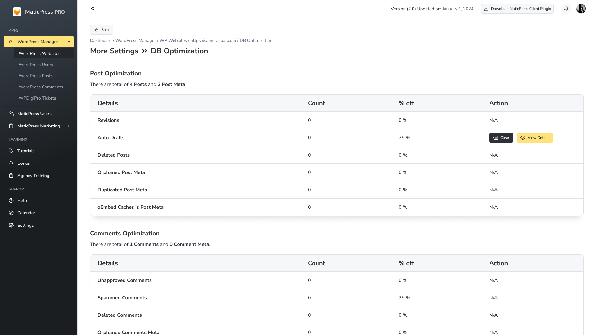1.5 Manage SEO
Take control of your website's SEO with MaticPress Pro. Easily manage meta tags, sitemaps, and other SEO elements to ensure optimal visibility and search engine rankings.
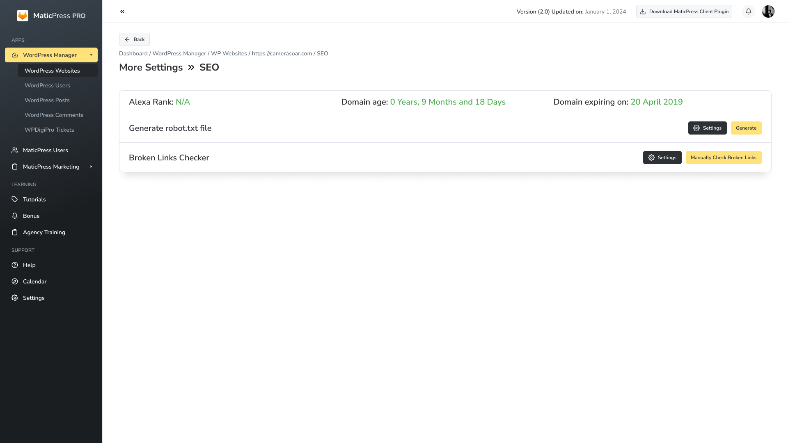1.6 Website Up and Downtime Checker
Stay informed about the status of your websites with MaticPress Pro's up and downtime checker. Receive real-time notifications and insights to address any potential issues promptly.
1.7 Manage the List of Marketing Elements Enabled on the Websites
Effortlessly manage marketing elements across all your WordPress sites. Enable or disable marketing features such as popups, sliders, headers, and footers to align with your marketing strategy.
2. Manage Your WordPress Site Users
Effectively manage user roles and permissions on your WordPress sites. MaticPress Pro provides a centralized user management system to streamline user access and permissions.
3. Manage and Create Posts on Your WP Site
Simplify the process of content management with MaticPress Pro. Create, edit, and manage posts across multiple WordPress sites from a single dashboard.
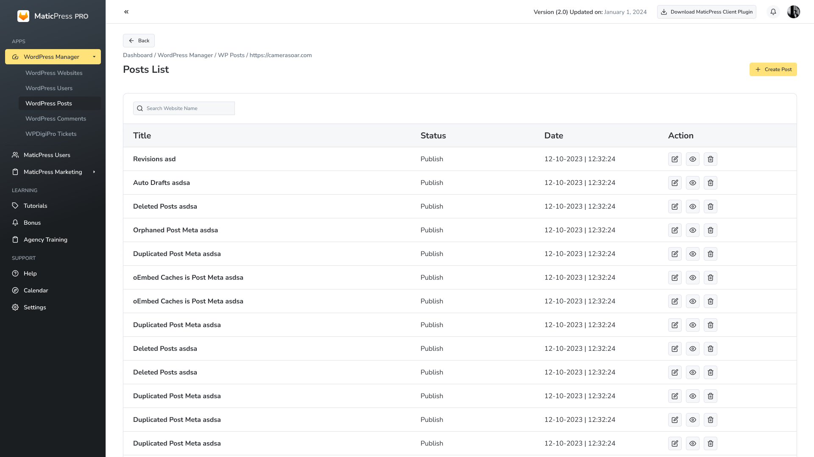 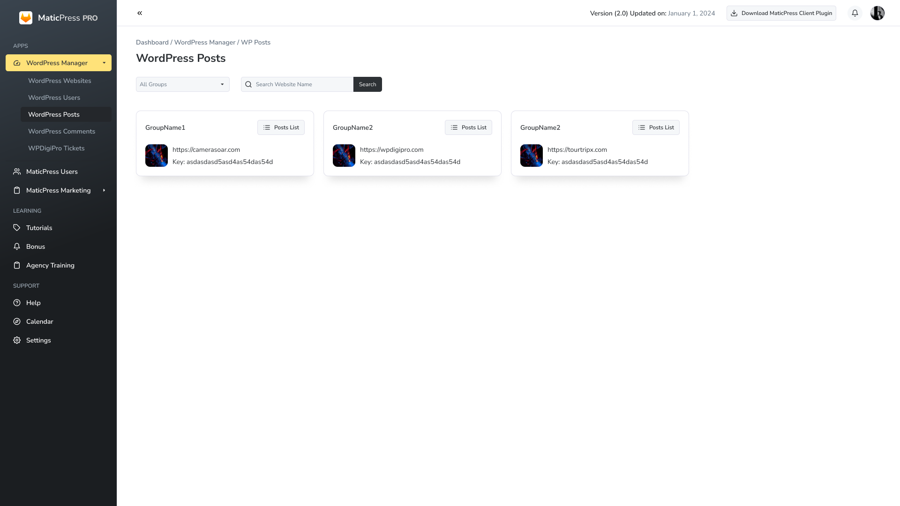4. Manage and Reply to Comments on Your WP Site
Engage with your audience effortlessly by managing and responding to comments on your WordPress sites through the MaticPress Pro dashboard.
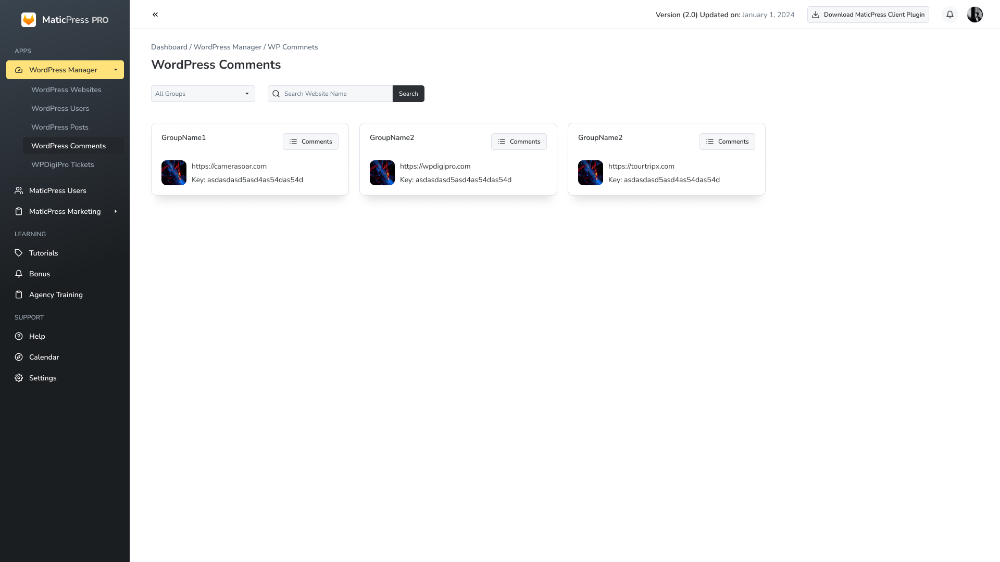 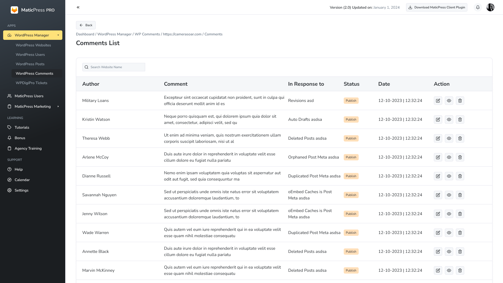5. Manage Website Tickets Using WPDigiPro Plugin
Utilize the integrated WPDigiPro plugin to efficiently manage and address website tickets. Streamline customer support and ticket resolution for your WordPress sites.
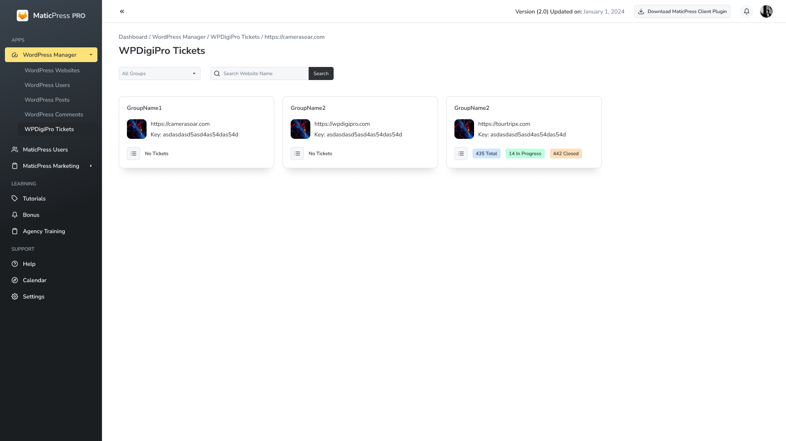 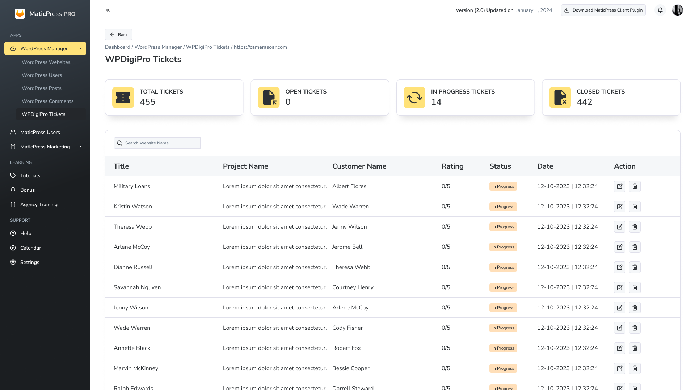6. Add Users, Manage Permissions to Your MaticPress Pro Dashboard
Control access to your MaticPress Pro dashboard by adding users and managing their permissions. Customize user roles to ensure secure and collaborative management.
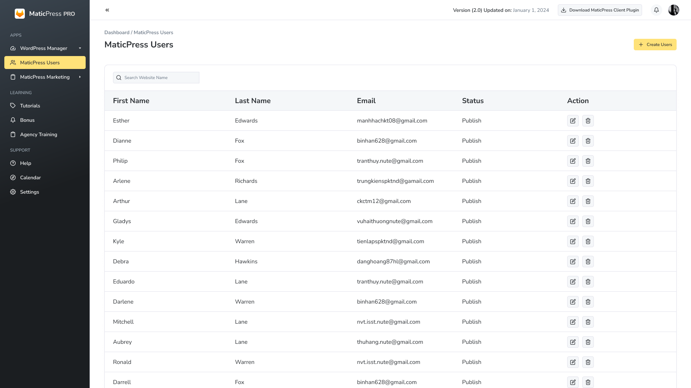 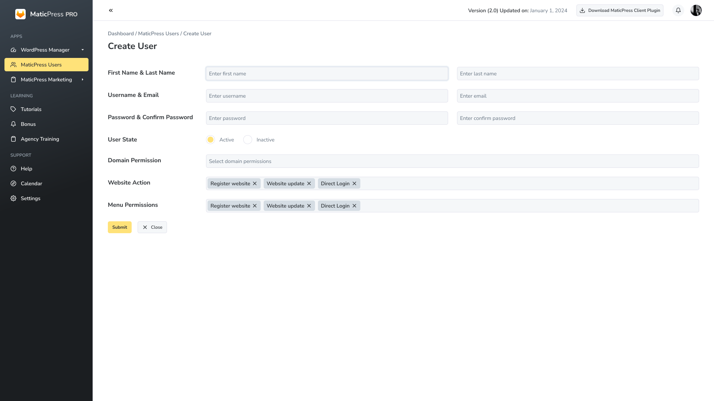7. MaticPress Pro Marketing
7.1 Add Marketing Popups to Your Website
Enhance your marketing strategy with customizable popups. MaticPress Pro allows you to effortlessly add engaging popups to your WordPress sites to capture leads and drive conversions.

7.2 Add Sliding Popups to Your Websites
Capture user attention with sliding popups. MaticPress Pro enables you to create and add sliding popups to your websites, providing a visually appealing way to convey messages or promotions.

7.3 Add Marketing Headers/Footers to Your Website
Customize your website's appearance with marketing headers and footers. MaticPress Pro allows you to add and manage marketing elements in the header and footer sections for consistent branding.

Autoresponders - Create Marketing Campaigns
Automate your marketing efforts with MaticPress Pro's autoresponder feature. Create and manage marketing campaigns, engage with your audience, and drive conversions efficiently.

We hope this documentation serves as a comprehensive guide to unlocking the full potential of MaticPress Pro. If you have any further questions or need assistance, please refer to our support resources or contact our dedicated support team. Happy managing!